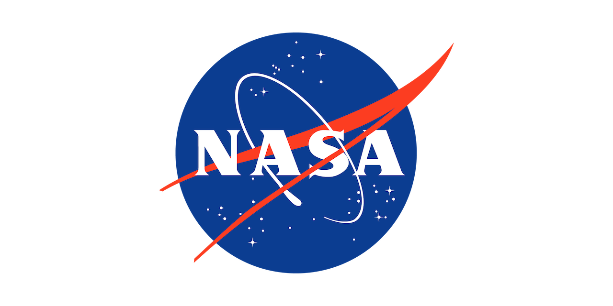

Overview
If astrobiologists discover evidence of life beyond the Earth, how should these findings be shared with the public? Which communication strategies and techniques would best support a nuanced and accurate public understanding? Astrobiology faces a fundamental tension between the enormous implications that would come with incontrovertible evidence of biology or biological processes elsewhere in the universe, and the fact that observations or experiments used to accumulate that evidence will be subject to uncertainty and controversy. How might scientists and science communicators work together to navigate this tension and communicate effectively about complex scientific evidence?
This virtual workshop organized by NASA’s Astrobiology Program (NAP) will bring together astrobiologists, science journalists, science communicators, and science content creators for a series of presentations, conversations, and activities aimed at building a greater shared understanding of the challenges and opportunities for each group such an event might present. By creating a space to exchange perspectives, experiences, professional realities, and forge lasting relationships between scientists and science communicators we hope to explore mutually-beneficial and socially responsible paths towards communicating the discovery of extraterrestrial life.
About the Workshop
The workshop will take place virtually across six half-day sessions over the course of two weeks in mid-October. These sessions are being facilitated by KnowInnovation, a company that specializes in working with experts to accelerate innovation and achieve actionable outcomes. Sessions will include historical case studies, breakout discussions about the current state of astrobiology and science communication, and collaborative activities based on possible detection scenarios. The workshop will result in a lasting community of shared interest connecting astrobiologists and science communicators as well as a white paper summarizing key insights from the event.
Who Should Apply?
The organizers an interested in receiving applications from a wide range of disciplines, including but not limited to:
- Researchers active in the professional astrobiology community or closely related fields
- Professional science journalists
- Professional journalists with experience communicating controversial or complex topics
- Social media content creators with a focus on science or space
- Historians and social scientists focused on astrobiology
- Science communication researchers
How to Apply
Space is limited so be sure to apply early! Attendance for the entirety of the workshop is expected to ensure a productive, results driven event.
Application Deadline
September 1, 2023 by End of Day
Complete Application >>
